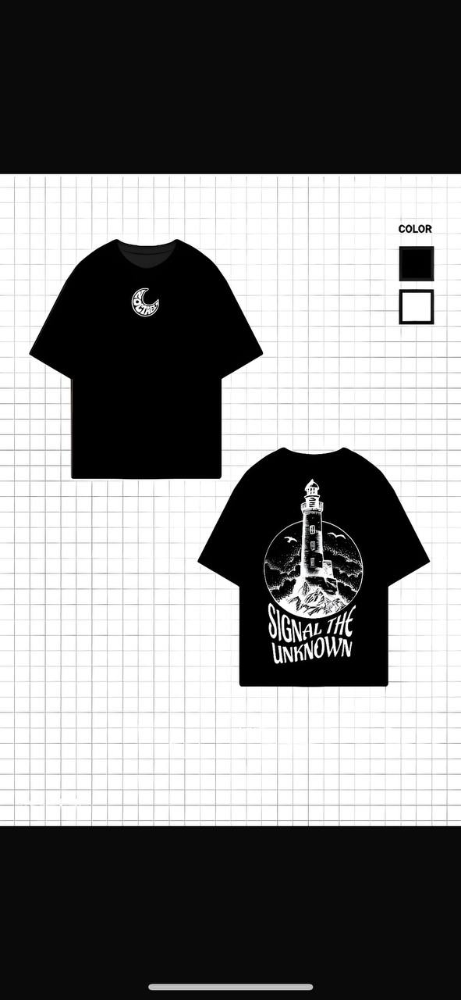
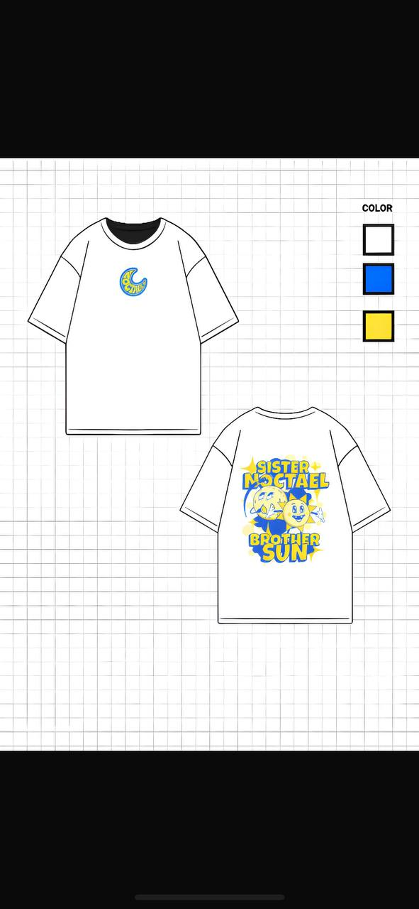
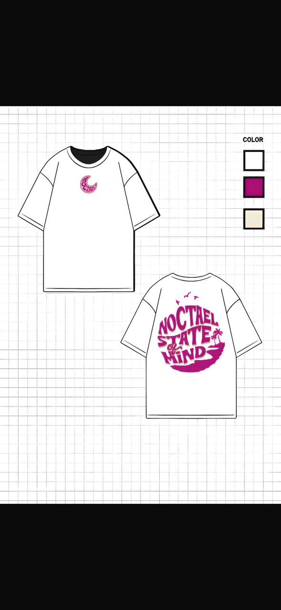

NOCTAEL - From Concept to Launch
It started with a name - NOCTAEL. A fusion of night, minimalism, and something almost otherworldly. The goal was not just to create a brand, but to build a visual identity that feels like it exists in its own space.
1. Identity First - Building the Logo
The process began with the logo. I explored forms that reflect the core idea of NOCTAEL: sharp, minimal, and nocturnal. The focus was on balance - something that could feel both technical and mysterious. This stage defined the tone for everything that followed.

2. First Drop - Translating Identity into Product
Once the identity was established, I moved into designing the first drop. I started in flat 2D, focusing on composition, typography, and placement. This allowed quick iteration while staying aligned with the brand's visual language.




3. From 2D to 3D - Bringing Designs to Life
After refining the designs, I transitioned them into 3D models. This step was not just about visualization, it was about immersion. By placing the designs onto realistic forms, I could better understand scale, material, and presence.
Model layout: 1 and 2 together, 3 and 4 together, and so on.
.jpg)
.jpg)
.jpg)
.jpg)
.jpg)
.jpg)
.jpg)
.jpg)
4. Motion and Marketing - Creating the Brand Atmosphere
With the 3D assets ready, I moved into animation. Instead of static promotion, I wanted NOCTAEL to feel alive, using motion to highlight textures, lighting, and mood. This became the foundation for marketing content, giving the brand a cinematic and high-end feel.
5. From Digital to Physical - Production
After validating the designs digitally, I moved to printing and production. This stage translated the concept into something tangible, ensuring quality, material accuracy, and consistency with the original vision.
6. Launch - A Platform Built for the Brand
Finally, I created a dedicated platform to present and sell the drop. The goal was to maintain full control over the experience, from how the products are displayed to how users interact with the brand.
Launch issue: server down on noctael.shop.
Closing
NOCTAEL was not just designed - it was built through a process that moves seamlessly from idea to visual, from motion to reality.